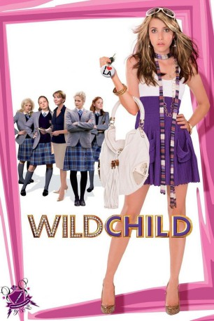

#5958 Wild Child: Erstklassig zickig
Alternativ: Wild Child
 
 IMDB-Wertung: 6.1 / 10
IMDB-Wertung: 6.1 / 10  Metascore: 0
Metascore: 0 
Die sechzehnjährige Poppy Moore ist eine stinkreiche, verzogene Göre aus L.A. Als sie ihren Vater mit einer exzessiven Party mal wieder an den Rand eines Nervenzusammenbruchs treibt, steckt er sie kurzerhand in ein Elite-Internat im fernen England. Doch anstatt ihr Leben jetzt endlich in den Griff zu bekommen, arbeitet Poppy nur auf ihre Rückkehr nach Amerika hin: Sie versucht, durch unmögliches Verhalten ihren Rauswurf zu erzwingen, muss jedoch schnell erkennen, dass sie es erstmals mit ebenbürtigen Gegnern zu tun hat - ihren britischen Mitschülerinnen und Lehrern, die gar nicht daran denken, sich Poppys Launen gefallen zu lassen.Schliesslich begreift Poppy, dass ihr rebellisches Auftreten keinen Sinn hat: Die aufmüpfige Teenagerin passt sich an und gewinnt neue Freunde, mit denen sie den ultimativen Fluchtplan in Gang setzt. Doch dann trifft Poppy auf die erste grosse Liebe ihres Lebens und will England plötzlich gar nicht mehr verlassen...
Jahr: 2008
Dauer: 98 Minuten
FSK: 0
Land: USA Studio: Universal PicturesTonspuren: DTS - ,
Untertitel: Deutsch, Englisch,
Auflösung: 1080p (1920x1040) Größe: 8652 MB
Genre: Drama, Komödie, Liebe
Regisseur: Nick Moore
Drehbuch: Tom Collins
Soundtrack:
Darsteller:
 Emma Roberts als Poppy
Emma Roberts als Poppy- Lexi Ainsworth als Molly
- Shelby Young als Ruby
- Johnny Pacar als Roddy
 Aidan Quinn als Gerry Moore
Aidan Quinn als Gerry Moore- Natasha Richardson als Mrs. Kingsley
 Georgia King als Harriet
Georgia King als Harriet- Kimberley Nixon als Kate
 Juno Temple als Drippy
Juno Temple als Drippy- Sophie Wu als Kiki
- Linzey Cocker als Josie
 Shirley Henderson als Matron
Shirley Henderson als Matron Alex Pettyfer als Freddie
Alex Pettyfer als Freddie Selina Cadell als Mrs. Loughton
Selina Cadell als Mrs. Loughton Jason Watkins als Mr. Nellist
Jason Watkins als Mr. Nellist- Daisy Donovan als Miss Rees-Withers
 Nick Frost als Mr. Christopher
Nick Frost als Mr. Christopher- Paul Butterworth als Fireman
- Tommy Kijas als Jake
- Romina als Samantha
- Sonia Rockwell als Lola
- Carolina Bonetti als Poppy's Friend , uncredited
 Vanessa Branch als Rosemary , uncredited
Vanessa Branch als Rosemary , uncredited- Hazel Calderon als Poppy's Friend , uncredited
- Kris Edwards als Fred Segal Employee , uncredited
- Hallie Kate Eisenberg als Ruthie , uncredited
- Johnny Erasme als Krumper , uncredited
- April Gilbert als Cool Stranger , uncredited
- Wes Hager als High School Student , uncredited
- Jessica Jann als Party Guest , uncredited
- Collin Pelton als Teen , uncredited
- Jessica Rizo als Cool Stranger , uncredited
- Kelsey Sanders als Skye , uncredited
- Ruby Thomas als Jane
- Eleanor Turner-Moss als Charlotte
- Maisie Preston als 'Wow' Girl
- Rusty O'Hara als Minion
- Stephanie Barnard als Abbey Mount Lacrosse Team
- Lucy Billings als Abbey Mount Lacrosse Team
- Sophie Billings als Abbey Mount Lacrosse Team
- Josceline Cluff als Abbey Mount Lacrosse Team
- Yasmin St Clair Pearce als Abbey Mount Lacrosse Team
- Victoria Bull als Pupil , uncredited
- Henry Dankwah als Hot Mover , uncredited
- Liz Findlay als Teacher , uncredited
- Michele Fischer als Poppy's Friend , uncredited
- Natalie Louise Garcia als Daisy Bevan , uncredited
- Piers Mettrick als Bus Person , uncredited
- Dane Nielsen als Pool Boy , uncredited
- Kara Pacitto als Twin #2 , uncredited
Datei: X:\2008(N-Z)\Wild Child Erstklassig zickig (2008, FSK0, 1920x1040).mkv seit 09.04.2017
Festplatte: HD 2008(G-Z)-2009(A-F)
 Es gibt insgesamt 91 Filme in der Gruppe '2008(N-Z)'
Es gibt insgesamt 91 Filme in der Gruppe '2008(N-Z)'